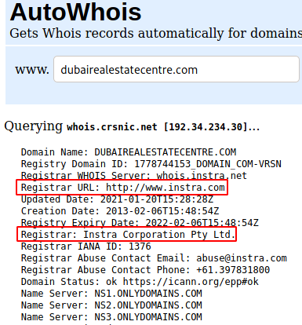

CentralOps - AutoWhois
Running `
whois
` through
CentralOps (For anonymity)
Information regarding the domain can help in developing a successfull social engineering attack.
Registrar domain provider is
instra.com. It is possible to try a phishing attack on the owner of the domain.
Forge an email from Instra Corp. to the owner of the domain, stating that the domain is about to expire and to click a link to renew it.
This can allow us access to their network.